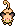
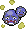
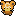
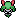
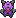
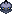

無理取鬧Torment
- 屬性
- 惡
- 分類
- 變化
- 威力
- -
- 命中
- 100%
- SP
- 20
- 冷卻
- 1.4 秒（變化組）
- 範圍
- 指定目標
- 距離
- 4 格
- 段數
- 1
- 前搖
- 0.35 秒
- 接觸
- 否
即時戰鬥效果
目標不能連續使用同一個招式。
對目標施加效果，不造成傷害。
即時戰鬥設計備註：
- 程度適中，維持原案。
升級時學會
招式光碟
 惡屬性招式光碟 ・少見（每打倒一隻該屬性寶可夢 1%，由 19 個招式分配）
惡屬性招式光碟 ・少見（每打倒一隻該屬性寶可夢 1%，由 19 個招式分配）
可以教會 100 隻寶可夢：
 阿柏蛇
阿柏蛇 阿柏怪
阿柏怪 尼多后
尼多后 尼多王
尼多王 超音蝠
超音蝠 大嘴蝠
大嘴蝠 喵喵
喵喵
貓老大 凱西
凱西 勇基拉
勇基拉 胡地
胡地 嘟嘟利
嘟嘟利 臭泥
臭泥 臭臭泥
臭臭泥 刺甲貝
刺甲貝 鬼斯
鬼斯 鬼斯通
鬼斯通 耿鬼
耿鬼 大岩蛇催眠貘
大岩蛇催眠貘 引夢貘人
引夢貘人 霹靂電球
霹靂電球 頑皮雷彈
頑皮雷彈 瓦斯彈
瓦斯彈
雙彈瓦斯 魔牆人偶
魔牆人偶 迷唇姐
迷唇姐 暴鯉龍
暴鯉龍 化石翼龍
化石翼龍 超夢
超夢 夢幻
夢幻 叉字蝠
叉字蝠 月亮伊布
月亮伊布 黑暗鴉
黑暗鴉 夢妖
夢妖 大鋼蛇
大鋼蛇 布魯
布魯 布魯皇
布魯皇 狃拉
狃拉
熊寶寶 圈圈熊
圈圈熊 盔甲鳥
盔甲鳥 戴魯比
戴魯比 黑魯加
黑魯加 幼基拉斯
幼基拉斯 沙基拉斯
沙基拉斯 班基拉斯
班基拉斯 土狼犬
土狼犬 大狼犬
大狼犬 長鼻葉
長鼻葉 狡猾天狗拉魯拉絲
狡猾天狗拉魯拉絲
奇魯莉安 沙奈朵
沙奈朵 吼爆彈
吼爆彈 爆音怪
爆音怪 朝北鼻勾魂眼
朝北鼻勾魂眼 大嘴娃
大嘴娃 利牙魚
利牙魚 巨牙鯊
巨牙鯊 跳跳豬
跳跳豬
噗噗豬 夢歌仙人掌
夢歌仙人掌 鐵螯龍蝦
鐵螯龍蝦
怨影娃娃 詛咒娃娃
詛咒娃娃 夜巡靈
夜巡靈 彷徨夜靈風鈴鈴
彷徨夜靈風鈴鈴 阿勃梭魯
阿勃梭魯 冰鬼護
冰鬼護 小火焰猴猛火猴
小火焰猴猛火猴 烈焰猴
烈焰猴 盾甲龍
盾甲龍 護城龍
護城龍 浮潛鼬
浮潛鼬 夢妖魔
夢妖魔 烏鴉頭頭
烏鴉頭頭 魅力喵
魅力喵 東施喵
東施喵 鈴鐺響
鈴鐺響 臭鼬噗
臭鼬噗 坦克臭鼬
坦克臭鼬 魔尼尼聒噪鳥花岩怪
魔尼尼聒噪鳥花岩怪 鉗尾蠍
鉗尾蠍 龍王蠍
龍王蠍 不良蛙
不良蛙 毒骷蛙
毒骷蛙 瑪狃拉
瑪狃拉 電擊魔獸
電擊魔獸 鴨嘴炎獸
鴨嘴炎獸 天蠍王
天蠍王 艾路雷朵
艾路雷朵 大朝北鼻
大朝北鼻 黑夜魔靈
黑夜魔靈 雪妖女
雪妖女